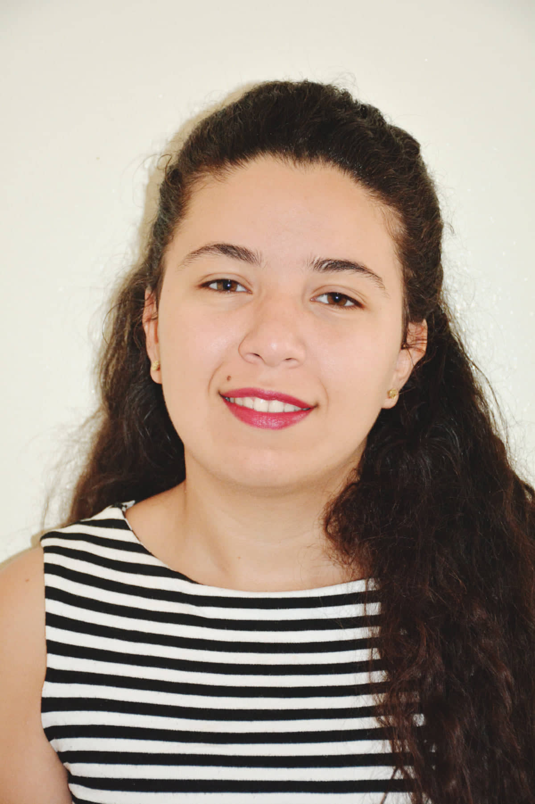

MOUNIR Soukayna
Etudiante MASTER 2 Developpement Logiciel Des Systemes D'Informations

Elève ingenieur en 3ème année genie logiciel et developpement mobile à l'Ensa de kenitra et étudiante en double diplomation en Master 2 developpement logiciel et Systèmes d'Information.
Information complementaires:
4, rue des archives bâtiment A, logement A036
29200 Brest, France
07.58.41.59.06
soukaynamounir@gmail.com
** Mes Formations **
- 2 eme année Master Developpement Logiciel Des Systemes D'Informations
- Université de Bretagne-Occidentale
- cycle d'ingenieur genie informatique
- Ecole nationale des sciences appliquées « ENSA » KENITRA 2017 à 2019
- Cycle préparatoire integré
- Ecole nationale des sciences appliquées « ENSA » KENITRA 2014 à 2017
- Baccalauréat en Sciences Mathématique option B
- Groupe scolaire ALMAARIF• 2013 à 2014
*************************************************************Mes experiences *******************************************************
- Développeur WEB et Mobile
- stage - Osisoftware - Rabat - juillet 2019
Conception et développement d’une application de gestion des étudiants
- Développeur .net/ SQLServer
- Stage - Fondation Mohammed VI pour la promotion des œuvres sociales des préposés religieux – Rabat -
juillet 2018
Conception et développement d’une application de sauvegarde et de restoration programmées de la bases de données
*************************************************************Mes competences *******************************************************
Langages de programmation
-
Technologies Web
-
- Javascript
- XML
- Laravel
- Ajax
- Symfony
- JSON
Développement mobile
-
- Android
- Swift
Bases de données
-
SPORTS ET LOISIRS
Langues
- Francais : Courant
- Anglais : courant
- Arabe : Langue maternelle